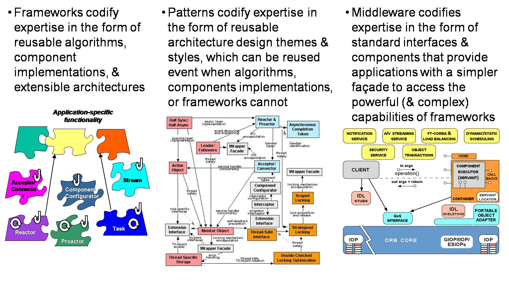

Nonostante il ruolo strategico che l'Architettura riveste nel denotare e conferire ad un sistema le sue caratteristiche essenziali, l'architettura di un sistema software spesso non costituisce il risultato di una fase esplicita di analisi e di progettazione, ma scaturisce in modo implicito dai meccanismi di combinazione relativi al linguaggio o allo stile di programmazione adottato per la codifica.
Ovviamente questo modo di procedere è molto pericoloso, soprattutto quando le metafore del linguaggio di codifica non sono pertinenti al problema. Si pensi ad esempio al caso di un programmatore che debba affrontare la costruzione di una applicazione di rete disponendo del solo linguaggio C.
Per colmare il divario tra il livello di progettazione e il livello di codifica si è diffuso l'utilizzo di un potente tipo di "strumento logico": il pattern.
L'ideatore riconosciuto del concetto di pattern è l'architetto, Christopher Alexander [Alexander79] che, di fronte alla necessità di dover risolvere ricorrentemente tipologie di problemi simili, ha proposto l'idea di catturare la "struttura di una comprovata soluzione efficace" attraverso una descrizione, detta appunto pattern. Un pattern per Alexander stabilisce una relazione tra un contesto, un insieme di forze che caratterizza quel contesto e una configurazione che permette di trovare un equlibrio tra quelle forze, anche se contrastanti tra loro. Una configurazine specifica i partecipanti al pattern, le loro responsabilità e le loro interazioni; il pattern spiega come e perchè le forze sono state bilanciate in quel modo.
Come già accaduto per il concetto di oggetto, anche per il concetto di pattern sono state proposte molte visioni e definizioni. La definzione di [POSA1] pag. 8 dice: A pattern for software architecture describes a particular recurring design problem that arises in specifc design contexts, and presents a well proven generic scheme for its solution. The solution scheme is specified by describing its costituent components, their responisibilites, and the way they collaborate.
Un pattern fornisce uno schema di soluzione (non una soluzione immediatamente disponibile) per un problema ricorrente adottata in uno o più sistemi reali e individuato attraverso un'opera di astrazione. Martin Fowler definisce (in Analysis Patterns, pg.8) un pattern come an idea that has been useful in one practical context and will probabily be useful in others. Egli ribadisce anche (pg.12) che patterns are suggestions, not prescriptions.
|
Figure 1. Framework, pattern, middleware

|